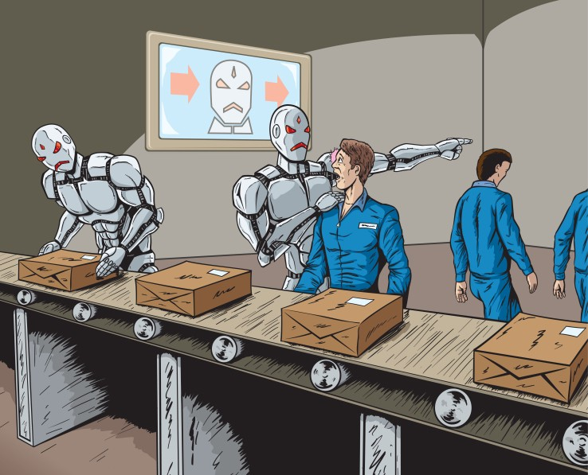

The first thing that comes to most people's minds is this:
Evil robots taking over the world
AI is actually much different from that. All people are seeing is
one type of artificial intelligence, namely generalized AI.
In this, the AI can answer any question we might have and
can do anything a human can do, but it's not super realistic.
AI is all about data; it doesn't work without us feeding it data.
AI Revolution - a lot of changes in the last half century that led up to it
2 Big Developments in Computing:
1. Huge Increase in Computing Power
● How fast computers can process data
2. Internet and Social Media
● Much more data